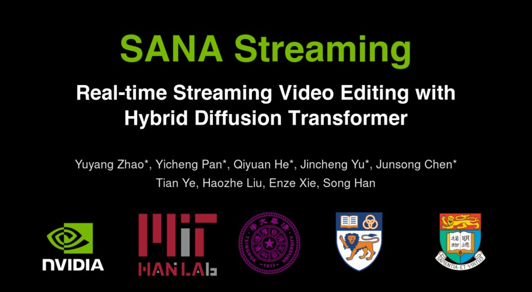
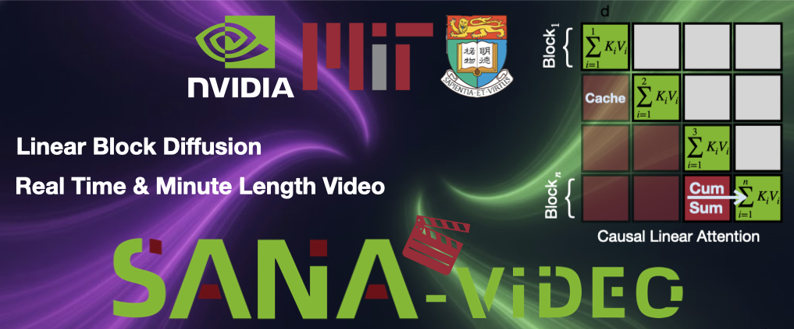
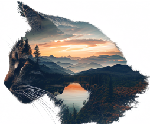
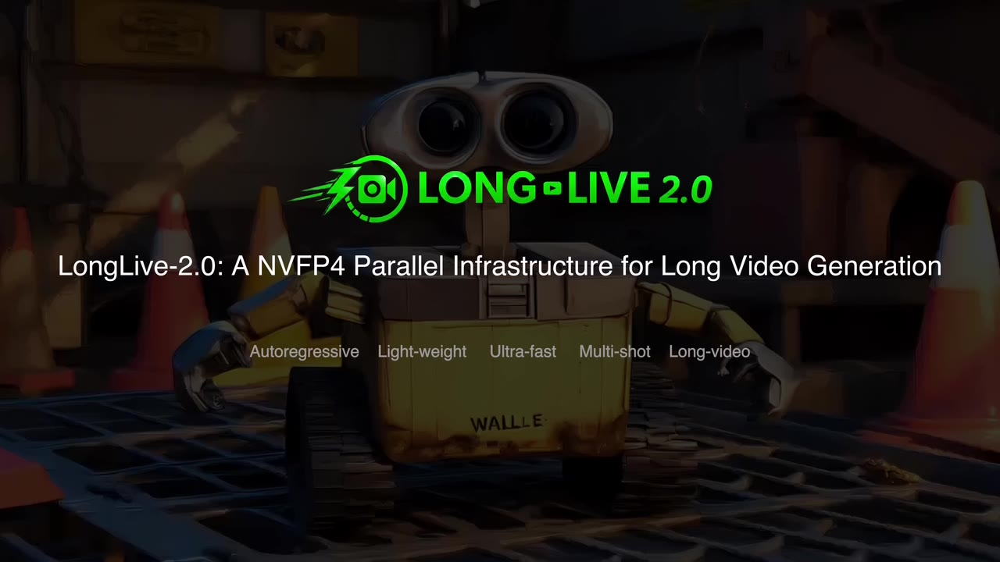
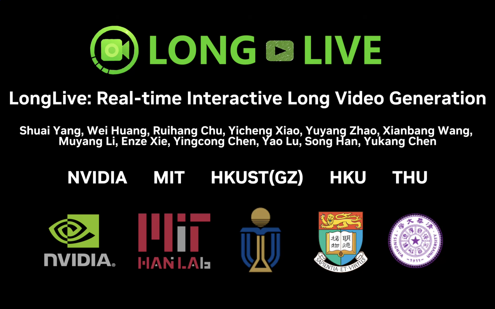

|
Yuyang Zhao I am a Research Scientist at NVIDIA Research, working with Prof. Song Han. I obtained my Ph.D. degree from National University of Singapore, where I was advised by A/P Gim Hee Lee. I obtained my B.E. degree from Tianjin University. We are working on efficient and high-quality AIGC models, including image, video and 3D generation. |

|
| News |
|
I am always looking to collaborate with motivated students and researchers passionate about efficient, high-quality generative modeling. Our current research explores the frontiers of video pre-training, post-training, video editing, and world models. If you are interested in pushing the boundaries of what is possible in video generation, please reach out!
|
| Work Experience |
|
|
Research Scientist NVIDIA Research | May 2025 - Present
|
|
|
Research Intern GenAI, Microsoft | April 2024 - August 2024
|
| SANA Series |
|
SANA-WM: Efficient Minute-Scale World Modeling with Hybrid Linear Diffusion Transformer
Haoyi Zhu*, Haozhe Liu*, Yuyang Zhao*, Tian Ye*, Junsong Chen*, Jincheng Yu, Tong He, Song Han, Enze Xie (* Equal contribution) Arxiv, 2026 SANA-WM is a 2.6B open-source world model that turns one image and a camera trajectory into 720p, minute-long, controllable video on a single GPU. |
|
|
 |
SANA-Streaming: Real-time Streaming Video Editing with Hybrid Diffusion Transformer
Yuyang Zhao*, Yicheng Pan*, Qiyuan He*, Jincheng Yu*, Junsong Chen*, Tian Ye, Haozhe Liu, Enze Xie, Song Han (* Equal contribution) Arxiv, 2026 SANA-Streaming is a real-time streaming video editing system for minute-level, high-resolution video-to-video editing. |
|
 |
SANA-Video: Efficient Video Generation with Block Linear Diffusion Transformer
Junsong Chen*, Yuyang Zhao*, Jincheng Yu*, Ruihang Chu, Junyu Chen, Shuai Yang, Xianbang Wang, Yicheng Pan, Daquan Zhou, Huan Ling, Haozhe Liu, Hongwei Yi, Hao Zhang, Muyang Li, Yukang Chen, Han Cai, Sanja Fidler, Ping Luo, Song Han, Enze Xie (* Equal contribution) ICLR, 2026 (Oral) SANA-Video is an efficient and high-quality video generation model. The LongSANA variant combines SANA-Video with LongLive to generate long and high-quality videos with 27 FPS generation speed. |

|
SANA-Sprint: One-Step Diffusion with Continuous-Time Consistency Distillation
Junsong Chen*, Shuchen Xue*, Yuyang Zhao†, Jincheng Yu†, Sayak Paul, Junyu Chen, Han Cai, Song Han, Enze Xie (* Equal contribution, † Core contribution) ICCV, 2025 Highlight One-step and few-step high quality image generation. |
|
 |
SANA 1.5: Efficient Scaling of Training-Time and Inference-Time Compute in Linear Diffusion Transformer
Enze Xie*, Junsong Chen*, Yuyang Zhao†, Jincheng Yu†, Ligeng Zhu†, Yujun Lin, Zhekai Zhang, Muyang Li, Junyu Chen, Han Cai, Bingchen Liu, Daquan Zhou, Song Han (* Equal contribution, † Core contribution) ICML, 2025 New SoTA in GenEval with efficient scaling. |

| Generative AI |
|
 |
LongLive-2.0: An NVFP4 Parallel Infrastructure for Long Video Generation
Yukang Chen*, Luozhou Wang*, Wei Huang*, Shuai Yang*, Bohan Zhang, Yicheng Xiao, Ruihang Chu, Weian Mao, Qixin Hu, Shaoteng Liu, Yuyang Zhao, Huizi Mao, Ying-Cong Chen, Enze Xie, Xiaojuan Qi, Song Han (* Equal contribution) Arxiv, 2026 LongLive-2.0 is an NVFP4 parallel infrastructure for efficient long video generation, improving training, inference, and memory efficiency for long-video workloads. |
|
 |
LongLive: Real-time Interactive Long Video Generation
Shuai Yang, Wei Huang, Yicheng Xiao, Yuyang Zhao, Xianbang Wang, Muyang Li, Enze Xie, Yingcong Chen, Yao Lu, Song Han, Yukang Chen ICLR, 2026 LongLive is a real-time interactive long video generation model. |

|
GenXD: Generating Any 3D and 4D Scenes
Yuyang Zhao, Chung-Ching Lin, Kevin Lin, Zhiwen Yan, Linjie Li, Zhengyuan Yang, Jianfeng Wang, Gim Hee Lee, Lijuan Wang ICLR, 2025 A joint framework for general 3D and 4D generation, supporting both object-level and scene-level generation with one or three condition views. |

|
Animate124: Animating One Image to 4D Dynamic Scene
Yuyang Zhao, Zhiwen Yan, Enze Xie, Lanqing Hong, Zhenguo Li, Gim Hee Lee Arxiv The first work to animate a single in-the-wild image into 3D video through textual motion descriptions. |

|
Make-A-Protagonist: Generic Video Editing with An Ensemble of Experts
Yuyang Zhao, Enze Xie, Lanqing Hong, Zhenguo Li, Gim Hee Lee Arxiv The first framework for generic video editing with both visual and textual clues. Make-A-Protagonist can achieve background editing, protagonist editing, and text-to-video editing with protagonist. |


| Scene Understanding |

|
Segment Any 3D Object with Language
Seungjun Lee*, Yuyang Zhao*, Gim Hee Lee (* Equal contribution) ICLR, 2025 SOLE is a highly generalizable open-vocabulary instance segmentor and can segment corresponding instances with various language instructions. |

|
Style-Hallucinated Dual Consistency Learning: A Unified Framework for Visual Domain Generalization
Yuyang Zhao, Zhun Zhong, Na Zhao, Nicu Sebe, Gim Hee Lee IJCV, 2023 Extension of our ECCV 2022 paper (SHADE). This paper applies SHADE to visual domain generalization tasks, including semantic segmentation with Transformer backbone, image classification, and object detection. |

|
Adversarial Style Augmentation for Domain Generalized Urban-Scene Segmentation
Zhun Zhong*, Yuyang Zhao*, Gim Hee Lee, Nicu Sebe (* Equal contribution) NeurIPS, 2022 AdvStyle adversarially changes the channel-wise mean and standard deviation to diversify source samples. |

|
Style-Hallucinated Dual Consistency Learning for Domain Generalized Semantic Segmentation
Yuyang Zhao, Zhun Zhong, Na Zhao, Nicu Sebe, Gim Hee Lee ECCV, 2022 We introduce a dual consistency learning framework for domain generalized semantic segmentation, and propose a style hallucination module to generate pair-wise stylized samples. |

|
Novel Class Discovery in Semantic Segmentation
Yuyang Zhao, Zhun Zhong, Nicu Sebe, Gim Hee Lee CVPR, 2022 The first work focuses on novel class discovery in semantic segmentation. This work addresses the co-occurrence of base, novel and background classes. |

|
Learning to Generalize Unseen Domains via Memory-based Multi-Source Meta-Learning for Person Re-Identification
Yuyang Zhao*, Zhun Zhong*, Fengxiang Yang, Zhiming Luo, Shaozi Li, Nicu Sebe (* Equal contribution) CVPR, 2021 PDF / Code |
| Professional Service |
|
|
Stolen from Jon Barron |